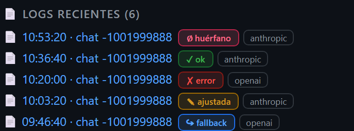
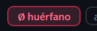
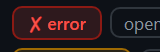
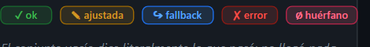
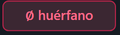

huerfano: render real vs mockup acordado.pipeline/dashboard.js @ ae3c20e31 en /legacy.
Derecha: .pipeline/assets/mockups/6440/02-dashboard-badge-huerfano.svg (baseline versionada, UX).|
RENDER REAL — /legacy · Actividad Commander
 zoom · badge
huerfano zoom · badge
error (fila contigua, otro rojo) |
MOCKUP ACORDADO — set a tamaño real
 zoom · badge
huerfano (ampliado en el mockup) |
| zona | texto | borde | fondo compuesto |
|---|---|---|---|
| render huérfano | #FF6B8A | #B8254A | #331F29 (sobre surface-0 #0D1117) |
| mockup huérfano | #FF6B8A | #B8254A | #3B2732 (sobre surface-1 #161B22) |
| render error | #F85149 | #8B1A14 | #2E191D — otro rojo, no el rosa |
rgba(255,107,138,0.16) compone contra superficies distintas: 0,16·255+0,84·13 = 51,7 → 0x33 en el render (surface-0)
y 0,16·255+0,84·22 = 59,3 → 0x3B en el mockup (surface-1). El propio mockup declara #341F29 como fondo compuesto real.